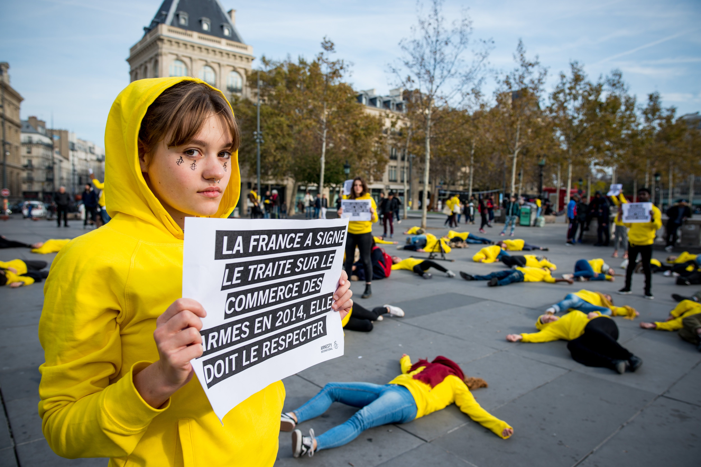
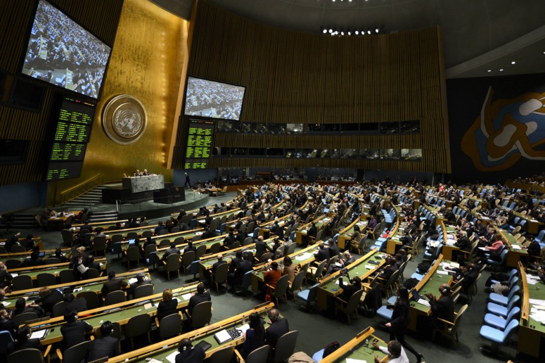
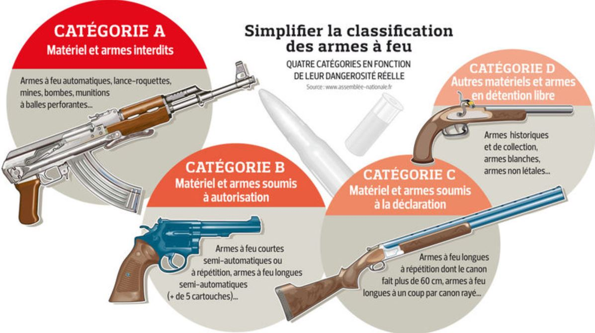
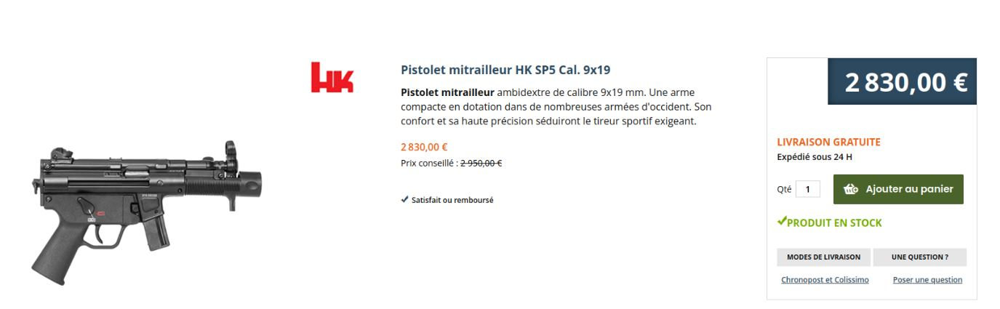
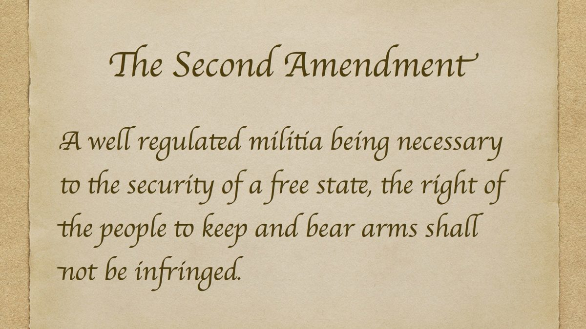
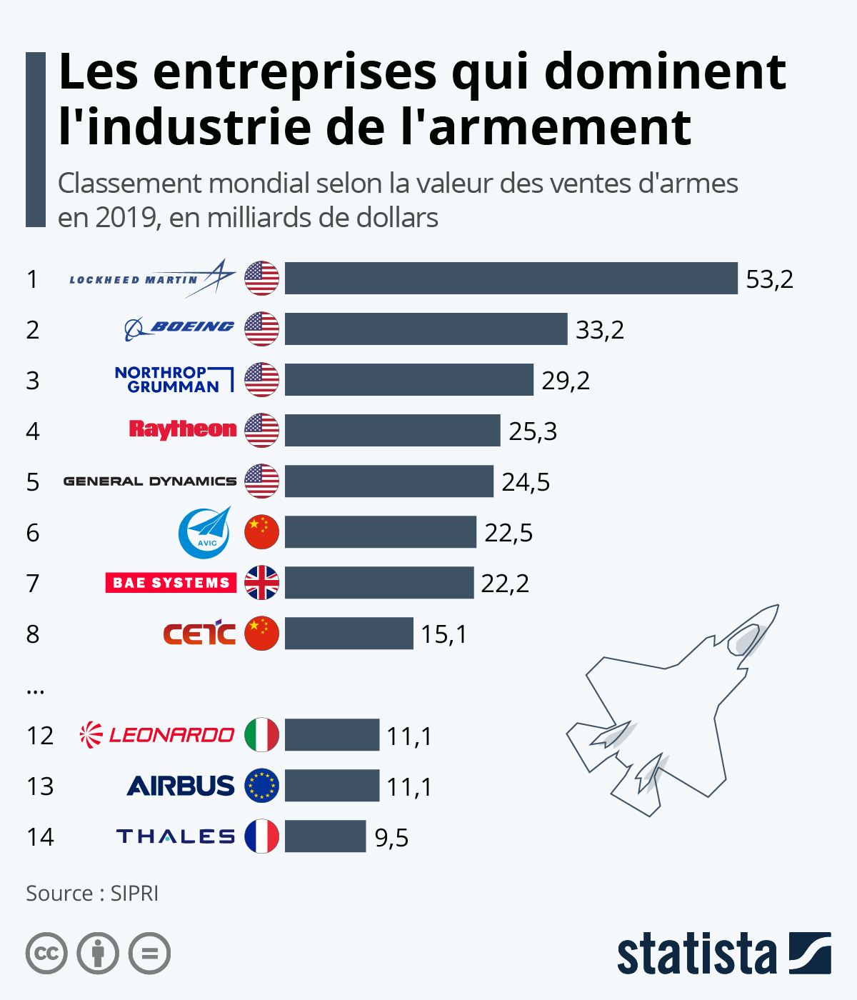
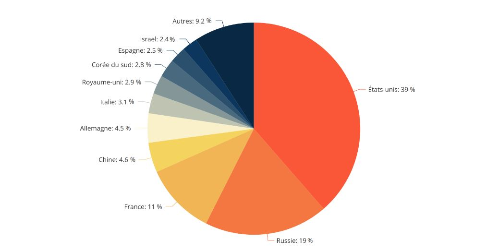
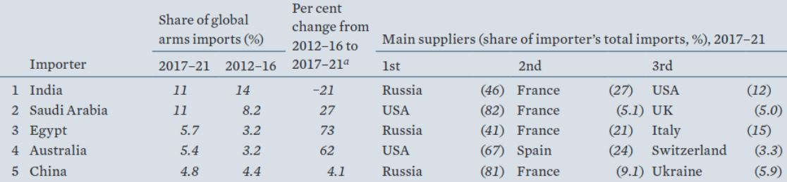
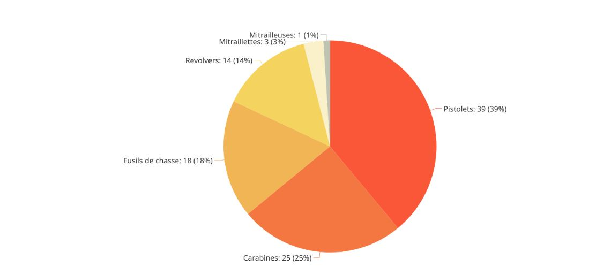
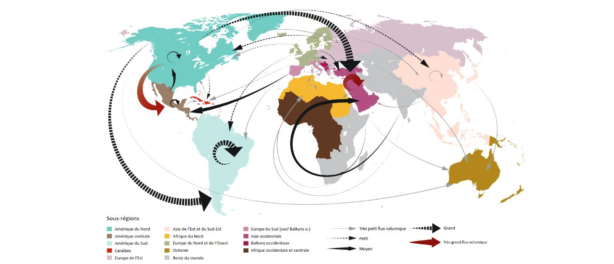

Qui sont les acteurs au coeur de cette controverse ?
Les acteurs dans le domaine de l’armement sont nombreux. On peut les classer en différentes catégories, en fonction de leur activité professionnelle, de leur rapport aux armes, …
Vivant en France, nous avons choisi de nous concentrer sur les acteurs de notre pays. Cela permet d’avoir un cadre bien défini et cela à aussi simplifié nos recherches.
Les acteurs industriels
Les acteurs industriels français sont connus dans le monde professionnel de par leur effectif, leur ancienneté, leur positionnement en bourse.
On retrouve des groupes comme Thalès, Safran, Dassault, Naval groupe. Toutes ces entreprises de défense emploient des milliers de personnes (80 000 pour Thalès, 76 800 pour Safran, 12 757 pour Dassault, 15 792 pour Naval) et sont des géants du secteur. Leurs chiffres d’affaires annuels s’élèvent jusqu’à des milliards. Bien que ces entreprises soient françaises, leur rayonnement est désormais international.
Ces entreprises ont des intérêts à maintenir un commerce stable de l’armement : c’est leur cœur de métier, ce qui leur permet d’embaucher, de payer leurs salariés, de continuer à faire tourner leurs usines.
On peut donc conclure qu’il y a un parti pris par cette catégorie d’acteur.
Les entreprises ne sont bien évidemment pas les seuls acteurs en lien avec cette controverse. On retrouve des acteurs publics.
Les acteurs publics
C’est le cas du ministère des armées français. Son rôle est la préparation et la mise en œuvre de la politique de défense pour la France. On retrouve à sa tête le ministre des armées, Sébastien Lecornu. La mission prioritaire du ministère des Armées est d’assurer la protection du territoire national, de la population et des intérêts français partout dans le monde.
Cet acteur est un acteur politique, qui défend les intérêts du pays. Les intérêts financiers sont secondaires.

D’autres acteurs publics sont par exemple le GICAT ou la CIEEMG.
Le GICAT(Groupement des Industries françaises de Défense et de Sécurité Terrestre et Aéroterrestre) est un regroupement d’entreprises françaises dont les objectifs sont la défense des intérêts des industriels devant différentes autorités politiques (en France, en Europe, à l’internationale), la promotion des offres de ses membres et le soutien pour développer leurs exportations. Le groupement aide également au maintien d’un échange constant entre les industries et leurs clients, afin de s’assurer de la bonne compréhension des besoins de chacun, et ainsi d’y répondre au mieux. On note que les entreprises citées plus haut font partie de ce regroupement.
On remarque donc que cet acteur permet aux entreprises du secteur de l’armement de se mettre en avant. C’est un tremplin pour mettre en place des contrats entre clients et entreprises.
Concernant la CIEEMG (Commission interministérielle pour l'étude des exportations de matériels de guerre), son objectif n’a rien à voir avec ceux du GICAT. Il s’agit d’une commission regroupant 12 ministres français (ministre des Affaires étrangères, de la Défense, de l'Économie et des Finances, de l’Intérieur, …) qui examine les demandes d’exportation de matériel de guerre. L’avis émis est ensuite transmis au Secrétaire général de la défense et de la sécurité nationale, qui a la décision finale.
Cet acteur a un rôle plus préventif que les acteurs précédents. Il y a une évaluation des avantages et des risques des demandes. Le côté financier n’est plus le seul qui est pris en compte.
Les associations
À côté de ces acteurs, on retrouve les associations. En France, on retrouve la Fédération Nationale des Chasseurs (FNC). Une autre association mondialement connue est la NRA, National Rifle Association, une association américaine.
Si on se concentre sur la FNC, celle-ci rassemble environ 70 000 associations de chasses et 500 000 chasseurs.
L'association cherche à “promouvoir la chasse, défendre la ruralité et préserver la biodiversité” (il s’agit du slogan qu’on retrouve dès notre arrivée sur le site Internet de la FNC). L’association œuvre également pour la régulation des armes relatives à la chasse et soutient le commerce légal des armes de chasse.
Cependant, il est intéressant de noter que la chasse n’a pas une image très positive auprès des Français : seul 1 Français sur 5 est favorable à la chasse et plus de la moitié est opposé à la chasse. Les Français sont très favorables à ce que la chasse soit plus strictement encadrée.
Une autre association importante dans ce sujet est Amnesty International. Cette association est connue pour défendre les droits de l’Homme. Régulièrement, Amnesty International France publie des rapports sur les ventes d’armes de la France : qui sont les acheteurs, quelles sont les conséquences sur le pays. Parfois, des manifestations pour plus de transparence autour de ces ventes d’armes sont organisées.
D'autres acteurs
Enfin, il est intéressant de parler des différents traités que la France a signés. On peut citer le TCA, Traité sur le Commerce des Armes. Ce traité mis en place par l'ONU en 2014, a été signé par 130 pays. Les objectifs généraux sont la régulation du trafic légal et la lutte contre le trafic illégal des armes non-nucléaire, chimique ou biologique. Les Etats signataires de ce traité s’engagent à réaliser des évaluations objectives de la situation politique, sociale du pays importateur. Avec des analyses effectuées avant la vente, ce traité vise à réduire, voire même arrêter la circulation d’armes qui pourraient être utilisées contre les populations locales, dans le cadre de génocides, de crimes contre l’humanité ou autres atteintes graves aux droits humains.
Un autre traité, que la France n’a pas signé, est le TIAN, Traité sur l'Interdiction des Armes Nucléaires.
Ce traité international vise à interdire les armes nucléaires dans le monde. De nombreux pays ont signé ce pays mais ce n’est pas le cas des puissances nucléaires. La France considère officiellement que « le Traité sur l'interdiction des armes nucléaires est un texte inadapté au contexte sécuritaire international marqué par la résurgence des menaces d’emploi de la force, le réarmement nucléaire russe, les tensions régionales et les crises de prolifération».
Comment est encadrée la vente d'armes en France ?
La législation des armes
En France, les armes à feu sont soumises à de nombreuses régulations pour éviter leurs utilisations et détention. C’est pour cela qu’elles sont classées en différentes catégories, en fonction de leur niveau de dangerosité. Cette classification est divisée en 4 catégories, possédant chacune ses lois concernant leur achat et leur détention. Ces catégories sont très précises, il est donc parfois compliqué de situer une arme et sa catégorie.
Les armes de catégorie A représentent les armes camouflées sous forme d’un autre objet, les armes de poing dotés d’une grande capacité de munition et les armes d’épaule (semi-automatique, armes à répétition)… Bien évidemment, il est interdit d’en acheter et d’en détenir une par des particuliers. Seuls certains professionnels sont autorisés sous autorisation préfectorale.
La catégorie B est soumise à autorisation préfectorale valable 5 ans maximum. Les détenteurs de telles armes doivent donc obligatoirement posséder cette autorisation. Leur achat n’est donc pas interdit, et même plutôt simple. En possédant une autorisation préfectorale et une simple licence de tir, nous pouvons facilement acheter une arme sur des sites internet ressemblant à Amazon. Avec possibilité de livraison par Chronopost ou Colissimo, ce qui signifie que des colis contenant des armes pouvant être létales peuvent circuler en France à travers les mains d’un livreur de la poste.
Les armes de catégorie C nécessitent une licence de tir ou un permis de chasse mais ne demandent pas d’autorisation particulière. Il est cependant demandé de déclarer l’arme une fois achetée.
Et enfin, la catégorie D est en vente libre pour toute personne majeure. Il s’agit d’armes historiques (avant 1900 et démilitarisées), d’armes blanches ou encore des armes conçues pour le tir ou blanc.
Nous avons précédemment parlé d’un permis de chasse ou bien d’une licence de tir, comment en obtenir une ? Une licence de tir est attribuée dès lors que vous devenez adhérent à un club de tir affilié à la Fédération Française de Tir. Quant-à-lui, le permis de chasse est obtenu à la suite à un examen, à la manière du permis de conduire. Après une formation théorique et pratique, l’examen comporte des exercices pratiques et des questions écrites. Une fois obtenu, pour chasser, tout pratiquant doit le faire valider chaque année.
Un permis de chasse permet de posséder légalement une arme de catégorie C.
À noter qu’il faut cependant être majeur et avoir un motif bien précis à fournir en cas de contrôle. En France, le port d'armes (catégories D comprises) sans motif valable est passible de 15.000 euros d’amendes et d’un an de prison.
Aux Etats-Unis, les lois sont bien plus laxistes. Le deuxième amendement de la Constitution des USA assure par exemple l’autorisation du port d'armes. Cependant de manière locale il peut être limité/interdit (chaque État possédant ses propres lois en la matière).
De plus, la vente est nettement plus libre et le transport ne requiert pas de justificatif. Le libre échange d’armes est soutenu par une association très influente aux USA appelée NRA (National Rifle of America). Cette association comptant environ 5.5 millions de membres assure la prospérité du commerce d’armes en défendant les droits civils liés aux armes aux USA.
Comment l'industrie prolifique et le trafic illégal coéxistent-ils ?
La vente d’armes, une industrie prolifique
L’achat et la vente d'armes à l’échelle des particuliers n’est pas représentatif du marché de l’armement. Comment fonctionne le marché mondial des armes ? Quels sont les principaux pays exportant des armes ? Ceux qui en importent le plus ? Combien ce secteur rapporte-t-il à l’échelle nationale ?
Nous parlons évidemment dans cette partie d’armes de catégories A, des armes permettant de faire la guerre.
Commençons de manière large, les ventes d’armes mondiales s’élèvent à 531 milliards de dollars en 2020. Vous l’aurez remarqué, ce secteur n’a pas connu la crise sanitaire en effet, pour la sixième année consécutive, l’industrie mondiale de l’armement augmente son profit.
De son côté, la France devrait atteindre 28 milliards d’euros de vente pour 2021. Un score battant le précédent record datant de 2015 avec 16.9 milliards. Des résultats notamment portés par les gros contrats de Rafale signé avec la Grèce, l’Égypte, la Croatie et les Émirats Arabes Unis.
Et quelles sont les entreprises majoritaires dans ce secteur ? Pays symbolique lorsque nous parlons des armes à feu, à l’international les 5 plus grosses entreprises de production d’armes sont américaines, et ce depuis 2018. Lockheed Martin est la première entreprise mondiale dans le secteur de la défense et de la sécurité. Avec des ventes d’armes s’élevant à 58.2 milliards de dollars en 2020, elle consolide sa place de leader dans ce marché.
Dans un rapport de la SIPRI (Stockholm International Peace Research Institute) publié en 2022 à propos des tendances dans les transferts d’armes de 2017 à 2021, nous pouvons observer les principaux pays exportateurs d’armes dans le monde. Sans surprise, les États-Unis se classent première de ce classement, avec 39% des exportations d’armes dans le monde. La France n’est pas à négliger, se positionnant 3ème avec 11% des parts.
À l’aide de ce graphique, nous pouvons observer que 77% des exportations mondiales d’armes à feu proviennent de seulement 5 pays. Ce secteur est donc largement dominé par peu de pays, une sorte de toute puissance militaire.
S’il y a des ventes, il y a des achats. Du côté des importations, la grande majorité des pays sont dans une situation géopolitique complexe.
Dans le même rapport de la SIPRI, nous pouvons remarquer que 5 pays représentent 38% des importations d’armes mondiales. L’Inde, l’Arabie Saoudite ou encore l’Egypte, ces pays importent énormément d’armes, représentant donc des “bons” clients pour les pays exportateurs. Un pays achetant des armes est-il un client comme un autre ? Ou faut-il vérifier l’utilisation qu’il compte faire de ces armes ?
En prenant l’exemple de la France, en 2021, 29% de ses ventes sont destinées à l’Inde, 16% au Qatar et 11% à l’Egypte. Ce dernier pays a d’ailleurs été au cœur de nombreuses polémiques à cause de répressions sanglantes lors de différentes manifestations. Est-ce une erreur de la part de la France de vendre des armes à un pays, comment savoir l’intention de ce pays ? Dans ce secteur, le profit semble donc important, peut-être autant voir plus que l’utilisation que ces armes vont avoir.
Ce marché est évidemment extrêmement régulé et très secret. Malheureusement, le marché légal ne représente pas l’ensemble des transactions d’armes dans le monde.
Le trafic d’arme, la partie émergée de l’iceberg
De son côté, le marché illégal en matière d’armement se compose dans le monde de tous les échanges non répertoriés d’armes, en particulier du marché noir comme l’approvisionnement terroriste, criminels ou encore les ventes non déclarés.
Il est difficile de quantifier le marché illégal. Cependant un projet de recherche indépendant soutenu par l'Institut de Hautes Etudes Internationales et du Développement de Genève a estimé pour 2017 le nombre d'armes en circulation en France à 12,7 millions.
Ce marché illégal s’approvisionne sur le « marché gris de l’armement » principalement par des détournements de stocks nationaux ou bien par un approvisionnement opportuniste sur les zones de conflit ou post-conflit. Selon l'ONU, le trafic d'armes est parmi les quatre activités illégales les plus lucratives avec le trafic de drogue, le trafic de médicaments et la prostitution.
Afin d’évaluer le flux d'armes, les États membres de l’ONU ont demandé à l'ONUDC (Office des Nations Unies contre la Drogue et le Crime) de collecter et analyser les informations sur le trafic d'armes à feu dans une étude financée par l'Union Européenne. Ces données, collectées sur 81 pays différents entre 2016 et 2017 permettent d’obtenir un bon indicateur de l’état actuel du trafic des armes. Bien que certainement sous-évalué, seulement 550 000 armes ont été saisies au cours de cette période, nombre expliqué par la qualité des données qui varie en fonction des pays ainsi que certains pays qui abaissent volontairement leurs statistiques pour des raisons administratives.
Dans ce rapport, nous pouvons notamment découvrir un classement des armes les plus trafiquées. Ce classement est différent en fonction du pays, à l’échelle mondiale il s’agit des pistolets qui ont été le plus saisis dans cette étude. 39% des armes saisies étaient des pistolets. Comme nous le montre ce graphique ci-dessous, la quantité d'armes “lourde” type Mitrailleuse et Mitraillette reste relativement bas.
Selon cette même étude, la majorité des armes trafiquées proviennent des États-Unis. Les membres de l’ONUDC ont ainsi pu mettre au point une carte des itinéraires des armes à l’échelle mondiale. Cette carte, riche en information montre par le biais des flèches, les principaux flux de transports des armes ayant été saisies. Nous pouvons remarquer que les États-Unis alimentent une grande partie du monde, notamment à l’étranger.
Le trafic d'armes à feu, comme analysé par cette étude, montre qu’il s’agit d’un marché organisé, pouvant même rivaliser au niveau des prix avec les armes “officielles”. Les États-Unis sont responsables d’un grand nombre d’export illégal d'armes à feu, majoritairement des pistolets. L’étude montre également une corrélation entre le trafic d'armes et le trafic de drogue. Corrélation méritant davantage de recherches pour être confirmée.
Sur cette courte période, 550 000 armes ont été déclarées saisies par les États faisant partie de cette étude, nombre largement sous-estimé selon cette même étude. Nous ne possédons évidemment pas de statistiques précises concernant ce secteur macabre, mais il est certainement plus important, lucratif et développé que nous pouvons l’imaginer.
Comment les droits des Hommes sont-ils considérés dans domaine de l'armement ?
Quel est notre avis sur ce sujet ?
Notre interview de la journaliste Anne Poiret
Les sources de cet article

Article du Taurillon sur la liberté de la presse en Norvège : https://www.taurillon.org/norvege-eldorado-de-la-presse
Classement de RSF de la Norvège :
https://rsf.org/fr/norvege
INA | La revue des médias | Liberté de la presse : pourquoi les pays nordiques sont des modèles journalistiques
https://larevuedesmedias.ina.fr/liberte-de-la-presse-pourquoi-les-pays-nordiques-sont-des-modeles-journalistiques
Les sources de cet article
Article d'Amnesty Inertnational sur le respect des droits aux USA :
https://www.amnesty.fr/pays/etats-unis
Aux USA, le journal New York Times a dû retirer de son journal une caricature à la suite de menaces :
https://www.contrepoints.org/2019/06/11/346628-liberte-de-la-presse-le-new-york-times-abdique-face-aux-pressions
Bilan des violences subites par les journalistes aux Etats-Unis :
https://pressfreedomtracker.us/
Raaport réalisé par l'Ambassade américaine francaise sur la liberté d'expression aux Etats-Unis :
https://photos.state.gov/libraries/amgov/133183/french/1304_Freedom_of_Expression_UnitedStates_French_Digital.pdf
Affaire Julian Assange contre les Etats-Unis :
https://www.amnesty.fr/liberte-d-expression/actualites/extradition-julian-assange-aux-etats-unis-rejetee
Classement de RSF des Etats-Unis :
https://rsf.org/fr/etats-unis
Les sources de cet article
Classement de RSF de la Tunisie :
https://rsf.org/fr/tunisie
Article d'Amnesty International sur l'évolution de la liberté d'expression en Tunisie :
https://www.amnesty.org/fr/latest/news/2020/11/tunisia-freedom-of-expression-at-risk-as-prosecutions-rise/
Recul de la liberté d'expression en Tunisie :
https://fr.tunisia-press.net/la-liberte-dexpression-est-menacee-en-tunisie-estime-amnesty-international/
Les sources de cet article
Article wikipédia posant les bases sur le pays de la Russie.
https://fr.wikipedia.org/wiki/Russie
La répression de la liberté d'expression par les lois.
https://www.hrw.org/fr/news/2017/07/18/russie-repression-de-la-liberte-dexpression
Partie d'un livre sur la liberté de la presse.
https://www.cairn.info/revue-droit-et-societe-2016-2-page-437.html
Projet de loi sur le contrôle de l'internet.
https://www.la-croix.com/Monde/Europe/En-Russie-projet-loi-renforce-controle-lexpression-Internet-2018-09-19-1200970050
Projet de loi sur le contrôle de l'internet.
https://lactualite.com/monde/conflit-en-ukraine-le-facebook-russe-dans-la-tourmente/
Le sort des opposants en Russie.
https://www.leparisien.fr/international/assassines-emprisonnes-exiles-le-triste-sort-des-opposants-dans-la-russie-de-poutine-27-03-2017-6799731.php
Les sources de cet article
Un article de Reporters Sans Frontières évoquant les récentes réformes concernant la liberté d'expression sur Internet au Vietnam.
https://rsf.org/fr/actualites/vietnam-la-france-doit-interpeller-le-chef-du-parti-communiste-sur-la-repression-de-la-liberte-de-la
Classement de la liberté d'expression dans le monde par pays de Reporters Sans Frontières, avec un résumé de la situation au Vietnam.
https://rsf.org/fr/vietnam
Le Temps nous renseigne sur les agissements des 2 géants du web que sont Google et Facebook dans le pays.
https://www.letemps.ch/monde/amnesty-international-alerte-censure-facebook-google-vietnam
Un dossier très complet de l'Ecole Normale Supérieur de Lyon traitant de l'autoritarisme de la République Vietnam dans son ensemble.
http://geoconfluences.ens-lyon.fr/informations-scientifiques/dossiers-regionaux/asie-du-sud-est/articles-scientifiques/vietnam-regime-autoritaire
Le New York Times nous informe détention d'un américain après avoir refjoint une manifestation au Vietnam.
https://www.nytimes.com/2018/06/14/world/asia/will-nguyen-vietnam-american-protest.html
Un article d'Amnesty international évoquant le cas de 5 manifestant pacifique condamné au Vietnam.
https://www.amnesty.org/fr/latest/news/2018/10/viet-nam-relentless-crackdown-freedom-speech-five-more-jailed/
Les sources de cet article